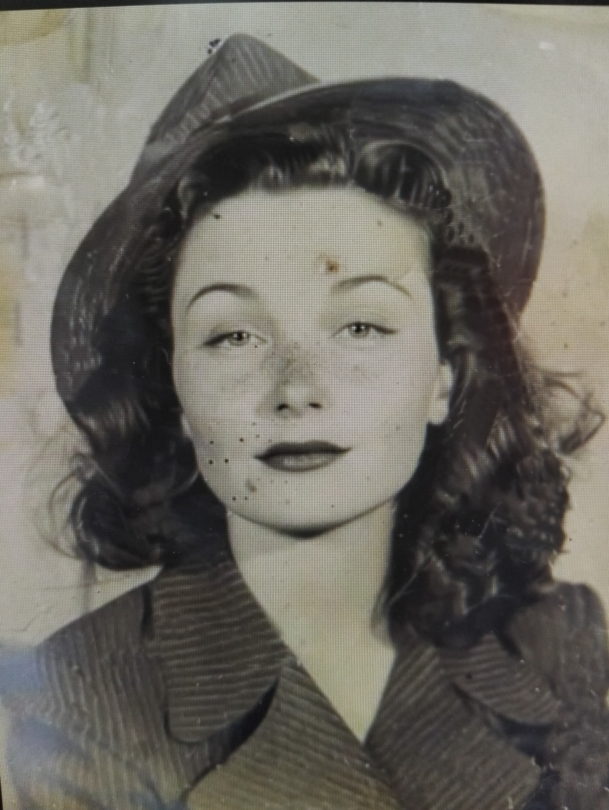
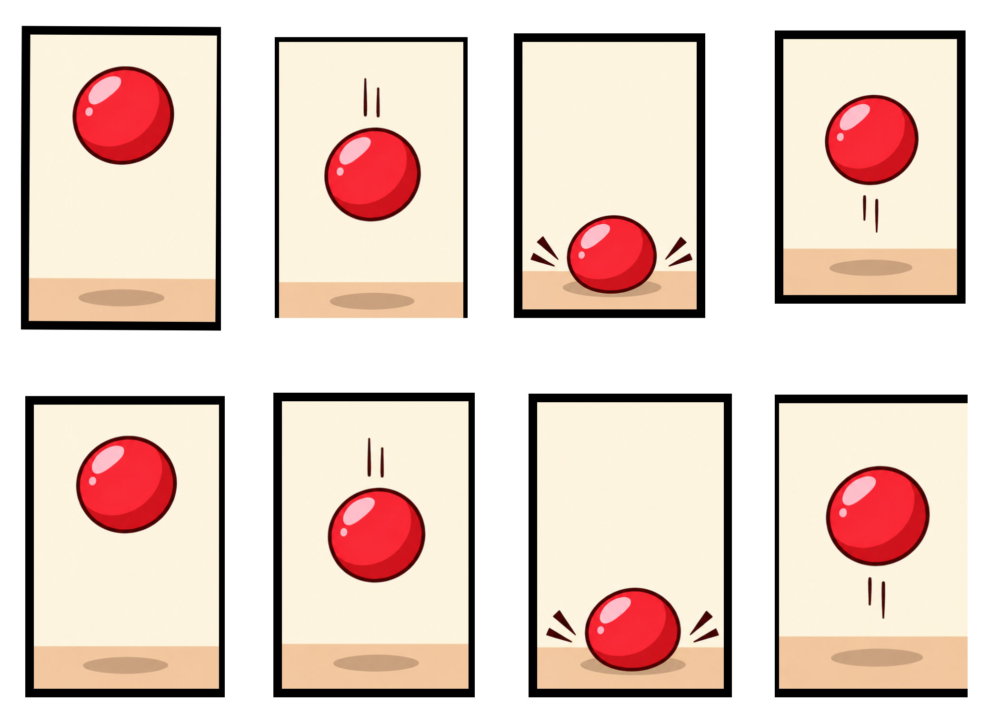

Healing brush
Healing Brush Tool – A tool in Photoshop used to remove unwanted spots, blemishes, or imperfections in an image by blending them with the surrounding area.
Open tutorial →
Clone stamp
Clone Stamp Tool copies pixels from one area of an image to another to remove unwanted objects and imperfections.
Open tutorial →
Creating a Photo Collage
Arrange several photographs into one balanced composition using selection, transform, and layer techniques.
Open tutorial →Editing and Enhancing Photographs
Improve a photograph with cropping, tonal adjustments, color correction, and careful retouching.
Open tutorial →Removing and Changing Image Backgrounds
Select a subject, refine its edges, remove the original background, and place it on a new scene.
Open tutorial →Creating a Promotional Advertisement
Build a simple advertisement with a product image, headline, supporting details, and a clear call to action.
Open tutorial →
Photo overlay
Photo Overlay in Adobe Photoshop combines two or more images by placing one image over another to create a creative effect.
Open tutorial →
Clipping mask
Clipping Mask – A tool in Photoshop that allows an image or design to appear only inside the shape or layer below it.
Open tutorial →Creating a Simple Logo
Construct a simple logo using shapes, text, alignment, and a limited color palette.
Open tutorial →
Creating GIF Animations
Create a short looping animation with frames, frame timing, and GIF export settings.
Open tutorial →